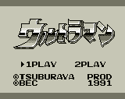
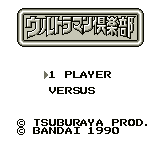
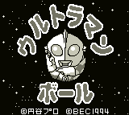
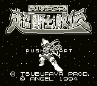

Ultraman - Gameboy Games

Controls
- A button: Kick
- B button: Punch
- Start: Jump
- Select: Pause
You control Ultraman as he battles various monsters. The graphics are poor, and the game control just plain sucks.
This game is for collecting only, not playing.

The attacks and defense of the characters are based on some sort of card system. Whoever has
the better cards will win the battle. Haven't figured out the game play yet.

Controls
- A button: Jump
- B button: Change into a Ball/Change Back to Ultraman
- Start: Pause
- Select: [not used]
Ultraman has the ability to turn himself into a ball (hence the title). In this form, he can bounce to
high platforms and break bricks. It is a cute game but not outstanding.

Controls
- A button: Jump
- B button: Punch
- Start: Pause
- Select: [not used]
Ultraman attacks with a standard punch, but he can also power-up and release a weapon by holding
down the punch button. You get a different weapon depending on how long you
hold down the punch button. The graphics are adequate, but there is nothing
outstanding about the game.
Anime Video Game Resource Center © 1998 by Luis A. Cruz